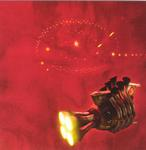

| Artist: | Rick Wakeman |
| Title: | Out There (with The New English Rock Ensemble) |
| Label: | Mascot Records M 7089 2 |
| Length(s): | 51 minutes |
| Year(s) of release: | 2003 |
| Month of review: | [04/2004] |
| 1) | Out There | 13:09 |
| 2) | The Mission | 6:22 |
| 3) | To Be With You | 6:22 |
| 4) | Universe Of Sound | 7.45 |
| 5) | Music Of Love | 6:44 |
| 6) | The Cathedral Of The Sky | 10:20 |
Damian Wilson in the past has already shown that his voice is of great strength, and in all fairness his voice is probably more fit for such bombastic endeavors as this album, as it is for Landmarq or solo discs. And of course if there's one person who can be the pathfinder in such a enterprise as this, it's Rick Wakeman.
Space travel has before been a source of inspiration for Wakeman, as it is here, with him dedicating the album to the crew of the exploded space shuttle Columbia.
Wakeman takes us on a musical discovery into space. As already suggested, there is ample body to the synths, with some big organ sounds swapping by at times as well. The over the top feel so often heard on his keyboard albums is kept out here (well, most of the time, that is), with a good balance between the instruments. The overall sound on the tracks sung by Wilson reminds of Arena somewhat, without becoming a challenger. Since Out There doesn't explore the edges as much as Arena has been doing the last couple of albums. Apart from that, Arena is heavier on the guitar (although Glynne rips it at times too). There is ample pomp, though.
To Be With You is less sound filled than the other tracks, sounding rather restrained. The choir is leading in most of the song. In the other tracks, though, it is the ever strong Wilson voice taking the lead, more often so than Wakeman's keyplay. The choir often comes round the corner, without reaching the domination it does in To Be With You. Not all of Fernandez's drums are acoustic. Their electronic replacements are not always as pleasant, at times sounding to mechanic, especially compared to the impressive sounding choir.
And now I'm left with just the one point: what to do with Atlantis?